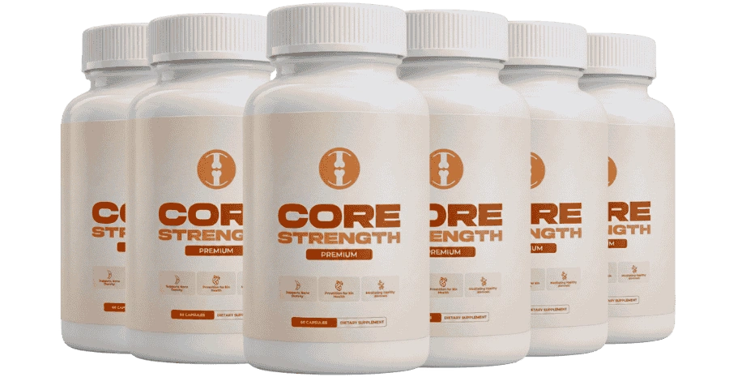

What Is CoreStrength And How Does It Work?
Most joint supplements take the same worn-out shortcut: pack a capsule with glucosamine and chondroitin, slap a label on it, and hope the cartilage somehow rebuilds itself. CoreStrength was designed around a problem those formulas never address.
Here is what actually happens inside an aging joint. Cartilage doesn’t just wear down from overuse — it loses the supply chain that keeps it intact. After forty, the body’s ability to absorb and deliver calcium to bones and connective tissue drops steeply. The raw material is still entering the body through food and supplements, but less and less of it ends up where it’s needed. Some of it drifts into soft tissue. Some deposits in arteries. The joints, meanwhile, run a growing deficit.
CoreStrength was built to reopen that supply line. The formula pairs Vitamin D3 — the metabolic key that unlocks calcium absorption in the gut — with Vitamin K2 in the MK-7 form, the compound that acts as a biological traffic controller, routing absorbed calcium toward bone and cartilage tissue instead of letting it settle where it causes harm. Calcium itself provides the structural foundation, and Black Pepper Extract (BioPerine®) multiplies the bioavailability of every ingredient so nothing passes through unused.
Four ingredients. No filler compounds inflating the label. No proprietary-blend mask hiding underdosed actives behind a combined number. Each component plays a defined role in a single sequence: absorb, direct, build, amplify.
The manufacturer is clear about what this is and isn’t: not a painkiller that numbs discomfort for a few hours, but a structural intervention aimed at the infrastructure that keeps joints flexible, cushioned, and capable of moving the way they did a decade ago. Because bone and cartilage remodel on their own biological schedule, meaningful results tend to build across weeks, not overnight — which is exactly why the 60-day guarantee exists.
CoreStrength Ingredients
Four ingredients, each with a defined role in the absorption–direction–building sequence. No proprietary blend, no filler compounds, no label padding.
- Vitamin D3 (Cholecalciferol) (The Absorption Key): Without adequate D3, your body absorbs as little as 10–15% of the calcium you consume — the rest passes through unused. Cholecalciferol activates the intestinal transport proteins that pull calcium into the bloodstream, turning a trickle into a usable supply. Everything downstream depends on this gate being open.
- Vitamin K2 (Menaquinone MK-7) (The Traffic Director): Calcium in the bloodstream is only half the equation — where it goes is what matters. K2 activates osteocalcin, the protein that binds calcium to bone and cartilage matrix, while simultaneously activating matrix GLA protein to keep it out of arteries and soft tissue. MK-7 is the longest-acting form, staying biologically active for days rather than hours.
- Calcium (as Calcium Carbonate) (The Structural Foundation): The raw building material for bone density and cartilage integrity. With D3 opening the absorption gate and K2 directing the flow, the calcium in this formula actually reaches the tissue that needs it — a critical difference from standalone calcium tablets that lack the delivery infrastructure.
- Black Pepper Extract (BioPerine®) (The Bioavailability Multiplier): A patented piperine extract clinically shown to enhance nutrient absorption by up to 30%. Acts on thermogenesis and intestinal permeability to ensure the other three ingredients cross the gut lining efficiently rather than being excreted before they can work.
Read together, the logic is sequential: open the absorption gate, direct the supply to bone and cartilage, provide the structural raw material, then amplify the entire process. Each ingredient sets up the next.
CoreStrength Side Effects
Every ingredient in this formula is one your body already encounters through food or synthesizes on its own. Vitamin D3 is produced naturally when skin is exposed to sunlight. Vitamin K2 occurs in fermented foods and organ meats. Calcium is the most abundant mineral in your body. Black pepper extract is derived from the same compound you sprinkle on dinner. There are no stimulants, no synthetic hormones, and no habit-forming substances in the blend.
The formula is free of gluten, soy, dairy, artificial colors, and artificial preservatives. Manufacturing takes place in the United States inside an FDA-registered, GMP-compliant facility, with standard quality-control testing applied to each production batch.
Across available customer feedback, no consistent pattern of adverse reactions has been reported. Calcium carbonate can occasionally cause mild digestive discomfort in sensitive individuals, particularly when taken on an empty stomach — taking the supplement with a meal typically addresses that.
Anyone currently taking blood-thinning medication (such as warfarin) should consult a healthcare professional before adding Vitamin K2, as it plays a direct role in the blood-clotting cascade. The same applies to anyone managing a diagnosed bone, kidney, or parathyroid condition, or taking prescription calcium or vitamin D supplementation that could overlap with this formula’s doses.
As with any dietary supplement, consulting a licensed healthcare provider before starting is always the safest approach — especially for those on prescription medication or managing a chronic condition.
CoreStrength Dosage
Take the recommended serving daily with a meal. Consistency is the single most important factor in this formula’s design.
Bone and cartilage tissue remodel slowly — far more slowly than muscle or skin. The biological processes that rebuild joint cushioning and strengthen the mineral matrix of bone operate on a timeline measured in weeks, not days. Skipping doses doesn’t just delay progress proportionally; it interrupts the steady-state availability of calcium and its directing cofactors, forcing the system to start rebuilding momentum each time.
Most users report the earliest signs of change — less morning stiffness, easier first steps out of bed — within the first two to three weeks. The deeper structural benefits, the kind that show up as sustained mobility and reduced discomfort through a full day of activity, tend to emerge closer to the four-to-six-week mark.
That timeline is also why the official site offers multi-bottle packages. They cover a full remodeling window without the friction of monthly reorders and reduce the per-bottle cost. Every purchase is a one-time transaction — no subscription, no automatic rebilling, nothing to remember to cancel.
Stick to the recommended amount. Taking more does not accelerate joint remodeling and may exceed the daily tolerable intake for calcium or vitamin D.
CoreStrength – Refund Policy
Every order ships with a full 60-day money-back guarantee.
Use CoreStrength for a complete cycle. If the morning stiffness is still there, if your knees still protest on the stairs, if flexibility hasn’t improved in any meaningful way — or if you’re simply not satisfied for any reason at all — contact support within 60 days for a full refund.
That window lines up with the biological timeline of this formula on purpose. Bone and cartilage don’t remodel in a weekend, so a seven-day trial would tell you nothing. Sixty days covers enough remodeling cycles to give the absorption–direction–building sequence time to produce measurable change — or prove that it hasn’t.
Full refund terms and the support contact are available on the official CoreStrength website.
CoreStrength Customer Reviews
 Robert Harmon
Phoenix, AZ
Verified Purchase – 6 Bottles
Robert Harmon
Phoenix, AZ
Verified Purchase – 6 Bottles
"My right knee had been giving me grief for three years straight — couldn’t squat down to pick up my grandkids without wincing. About five weeks in with CoreStrength I realized I’d been kneeling in the garden for twenty minutes without even thinking about it. That’s when I knew this wasn’t placebo. Ordered the six-pack because I’m not going back."
 David Moretti
Chicago, IL
Verified Purchase – 3 Bottles
David Moretti
Chicago, IL
Verified Purchase – 3 Bottles
"Mornings used to be the worst part of my day — everything stiff, hips locked up, fifteen minutes just to walk normally. I’ve tried glucosamine, turmeric, fish oil, you name it. Two weeks into CoreStrength the morning stiffness started fading. By week four my wife said I was moving like a different person. I actually look forward to my morning walk now."
 Dorothy Sullivan
Denver, CO
Verified Purchase – 3 Bottles
Dorothy Sullivan
Denver, CO
Verified Purchase – 3 Bottles
"My hands had gotten so stiff I’d stopped crocheting — something I’d done every evening for thirty years. A friend mentioned CoreStrength and I figured I had nothing to lose with the guarantee. Three weeks later the fingers started loosening up. I’m back to crocheting after dinner every night. Never thought a supplement would give me that back."
CoreStrength – Where To Buy
There is one detail worth knowing before you start searching for the best deal — and it’s the kind of detail that ends up costing people more than they expect.
CoreStrength is available exclusively through its official website. It is not stocked on Amazon, eBay, Walmart, or any third-party retail platform. Listings that resemble the product do appear on marketplace sites from time to time, but there is no way to verify whether the formulation is genuine, whether the capsules were stored under proper conditions, or whether what arrives is even the correct four-ingredient system.
There is also a hidden cost that only becomes clear after a problem arises: the 60-day money-back guarantee is tied to your purchase record on the manufacturer’s system. A marketplace order creates no traceable record with the company — meaning if you ever need to claim the guarantee or reach support, there is nothing on file to reference.
Ordering directly from the official CoreStrength website keeps everything intact: the authentic formula manufactured to the stated standards, the full 60-day guarantee attached to your name, and access to customer support if you need it.
Before completing a purchase, confirm you are on the official CoreStrength website — it is the only source that guarantees the authentic formula and full refund protection.
Is CoreStrength A Scam?
No — and the simplest way to see that is by looking at what the formula does not do.
A scam joint product typically hides behind a proprietary-blend label, lists fifteen or twenty underdosed ingredients to make the bottle look impressive, and relies on an anti-inflammatory masking effect that fades the moment you stop taking it. CoreStrength takes the opposite approach: four disclosed ingredients, each targeting a specific step in the calcium–absorption–delivery chain, with no pain-numbing shortcut built in.
That’s not the formula you would design if the goal were to fake short-term results. Every ingredient is publicly identified. Manufacturing occurs inside an FDA-registered, GMP-compliant facility in the United States. A 60-day money-back guarantee covers every order.
It does have limits, to be fair. Joint health is a complex system, and a structural supplement aimed at the calcium delivery pathway addresses one important piece of the puzzle, not all of them. Anyone dealing with an injury, an autoimmune joint condition, or severe chronic pain should pursue professional evaluation before relying on any supplement alone.
But for the person whose knees ache on the stairs, whose hips stiffen up after sitting too long, whose hands don’t move the way they used to — the arithmetic is simple. Sixty guaranteed days. If nothing changes, the money comes back. The only real cost was finding out.
As with any dietary supplement, consult a healthcare professional before starting if you have an existing condition or take prescription medication.

For those who want to verify product details or check current availability, the official CoreStrength website remains the safest and most reliable option.